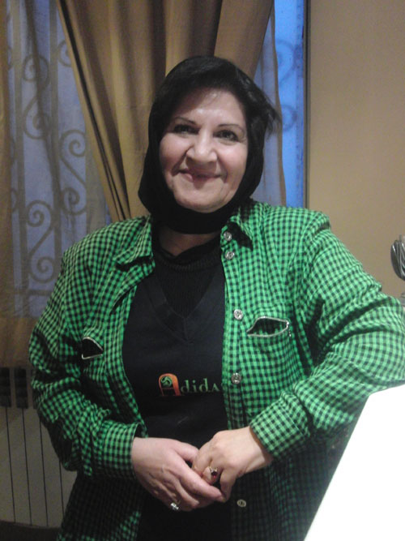

|
|

عالیه اقدام دوست، نخستین زنی که به خاطر برابری خواهی در زندان بود، پس از سه سال حبس آزاد شد
يكشنبه18 دی 1390

تغییر برای برابری - عالیه اقدام دوست، زنی که به گفته خودش «اعتراض بخشی از زندگی مدنی اوست»، پس از تحمل سه سال حبس قطعی از زندان آزاد شد.
عالیه اقدام دوست در روز 22 خرداد 1385 به همراه 70 نفر دیگر در تجمع اعتراض آميز زنان در میدان هفتم تیر بازداشت و دادگاهی شد. شعبه 15 دادگاه انقلاب تهران، او را به اتهام اقدام علیه امنیت به سه سال و چهار ماه حبس و 20 ضربه شلاق محكوم كرد. سه سال حبس وي در دادگاه تجدید نظر تایید شد و سرانجام روز 12 بهمن ماه 1387، ماموران اجرای احکام به در منزل وي در شهرستان فومن رفتند و او را تحت الحفظ به شعبه اجراي احكام دادگاه انقلاب تهران منتقل كردند.
پس از بازداشت عالیه، تلاش های زیادی از سوی وکلای مدافع او، فعالان جنبش زنان و حقوق بشر برای آزادی او انجام گرفت اما اقدامی از سوی دستگاه قضایی بعمل نیامد، همان طور که عالیه هم از خواسته های مدنی خود کوتاه نیامد. عالیه نخستین زنی است که طی سال های پس از انقلاب به جرم برابری خواهی محکوم به زندان شده است.
بهاره هدایت، از دیگر یاران جنبش زنان از دیگر متهمان تجمع زنان در 22 خرداد 1385 بود که اکنون نیز در زندان بسر می برد. بخشی از محکومیت بهاره به دلیل شرکت او در تجمع زنان در میدان هفتم تیر است.
اگر 12 بهمن، عالیه را بی خبر از دوستان و یارانش به زندان بردند، 18 دی ماه 1390 فعالان جنبش زنان و یاران او در برابر زنان و برای استقبال از این یار مقاوم جنبش زنان حاضر شدند.
سایت تغییر برای برابری، آزادی این یار جنبش زنان را به فعالان جنبش زنان و دیگر آزادی خواهان و برابری خواهان ایران تبریک می گوید.
جزئیات خبر آزادی عالیه اقدام دوست متعاقبا اعلام خواهد شد.